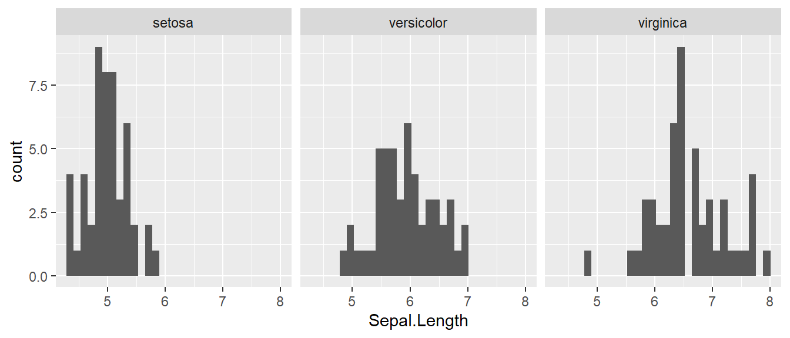

paste() and nchar())iris is a dataset that comes with base R. It consists of 150 observations with 5 columns, Sepal.Length, Sepal.Width, Petal.Length, Petal.Width, Species, which are features related with Iris flowers. You can view the first few rows using head():
head(iris)## Sepal.Length Sepal.Width Petal.Length Petal.Width Species
## 1 5.1 3.5 1.4 0.2 setosa
## 2 4.9 3.0 1.4 0.2 setosa
## 3 4.7 3.2 1.3 0.2 setosa
## 4 4.6 3.1 1.5 0.2 setosa
## 5 5.0 3.6 1.4 0.2 setosa
## 6 5.4 3.9 1.7 0.4 setosaCompute the sample mean, sample variance, and 90% quantile of Sepal.Length.
What is the fifth smallest value of Sepal.Length?
Obtain the following plots that describe the histogram of Sepal.Length by Species.
